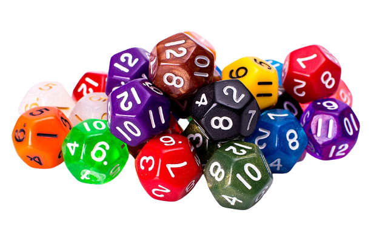

Un dodecaedro es un poliedro de doce caras, convexo o cóncavo. Cada cara es un pentágono regular. Es muy utilizado en juegos de mesa, especialmente en los juegos de rol. Generalmente, la cara inscrita con la cifra más baja (1) es la cara opuesta a la cara inscrita con la cifra más elevada (12), por lo que la suma de los números de caras opuestas es 13.
El dado de 12 caras es sin duda el dado menos utilizado de todo el set principal de dados, es tan cierto que en algunos sets de dados oficiales se sustituye este dado por un tercero de 10 caras.
Iván Casado Álvarez